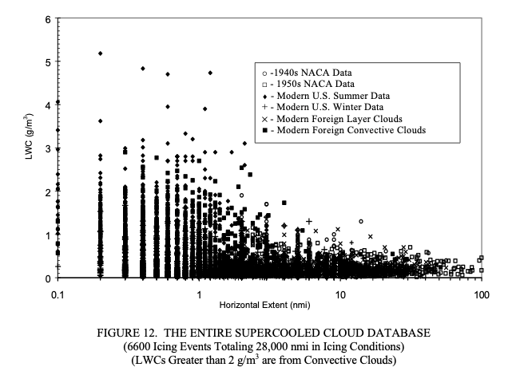

"28,000 nautical miles of in-flight measurements ... have been condensed into a computerized database"

There are 28000 nmi of measured natural icing flight test data in the database, with over 6000 individual measurements. Data from more than two dozen organizations for flights between 1952 and 1988 were collected into the database.
Dr. Richard Jeck of the FAA was a major contributor to the database. The data were analyzed in several of Jeck's publications. Reviewing the database and Jeck's publications gives us a opportunity to appreciate his decades of work in this field.
Jeck used the term "Supercooled Cloud Database", so here we will abbreviate that to SCDB.
There are a series of important publications:
- AR0030
- AR0374
- DSWC
Concepts:
- Data miles
- Natural LWC Probabilities
- Comparisons to Appendix C
Introduction
This report shows how to convert the conventional liquid water content (LWC) vs mean effective diameter (MED) design envelopes in Appendix C of 14 CFR Part 25 and 14 CFR Part 29 to equivalent, but more useful envelopes based on a LWC vs horizontal extent (HE) format. A number of potential uses are illustrated for the new format, particularly for comparing icing test exposures to the Appendix C envelopes and to natural probabilities of occurrence.
The LWC vs HE envelopes can also be recast into envelopes for any other LWC-related variable, such as icing rate or water catch rate, total water catch, and icing intensity, for example. In addition to the Appendix C design envelopes and their derivatives, envelopes are also presented which depict naturally occurring probabilities (99.9%, 99%, 95%, 90%, and 50%) of LWC and the dependence of these probabilities on median volume diameter (MVD), temperature, altitude, and even on the season of the year.
These can all serve for comparing icing test exposures from natural icing flights, icing wind tunnels, airborne spray tankers, and computer simulations to the design envelopes of Appendix C and to real world statistics for naturally occurring icing conditions.
The methods illustrated here provide the icing practitioner with straightforward, understandable, and meaningful ways to document, compare, and evaluate data on icing conditions. They offer a set of working standards for achieving consistency and uniformity among users. Some methods may be more useful than others, depending on the application, but a variety are offered, with examples, to illustrate the possibilities.
The examples also illustrate the use of computerized spreadsheet software for graphing icing variables and for conveniently adjusting or converting the Appendix C envelopes to fit particular applications. This adds new, modern versatility to the envelopes that is not possible with the conventional printed (fixed) version.
Predecessors
"Icing Characteristics of Low Altitude, Supercooled Layer Clouds." 1980
"A New Data Base of Supercooled Cloud Variables for Altitudes up to 10, 000 Feet AGL (Above Ground Level) and the Implications for Low Altitude Aircraft Icing" 1983
"A New Characterization of Supercooled Clouds Below 10,000 Feet AGL" 1988
"Selecting representative test points for icing conditions using the new faa/nrl database" 1989
AR07/04
ACKNOWLEDGEMENTS
The author is greatly indebted to colleague Dr. James T. Riley who helped process much of the modern data. Thanks are also due to Ernest Schlatter, former Program Manager for aircraft icing, and to Charles Masters, former Branch Manager for flight safety research, for their patience and support on this long project.
Some of the same data is replotted in the publications, although with the different plotting software and scales this may not be readily apparent. These are the same data, to my ability to digitize the curves:


DSWC Figure 11a also matches (not shown).
AR07/04 Figure 22 is replotted in DSWC Figure 6 (separated into convective and layer cloud subplots.)

The curves depict the cumulative LWC probability for generally longer cloud transects consisting of one or more uniform intervals strung together until the research airplane leaves the cloud or reverses direction.
[Fig 16 of AR-07/4]
Natural LWC Probabilities
Dr. Jeck introduces the term "Natural LWC Probabilities" in the context of discussing analysis of flight test data:
3.2 COMPARING WITH NATURAL LWC PROBABILITIES.
One comparison that is not possible with Appendix C is the question of how common, or uncommon, was a particular test flight icing encounter? Or, how representative of nature is a particular icing wind tunnel exposure or computer simulation? In other words, what is the probability of finding such a test exposure in nature?
Figure 23 shows a set of LWC probability curves derived from about 23,000 nmi of flight data in stratiform icing conditions. Any given curve indicates the probability that randomly encountered, stratiform icing conditions will have an average LWC somewhere below the curve. For example, the 50% curve means that half of the LWC averages will lie below the curve and half will lie above it. The 90% curve means that 90% of all LWC averages can be expected to lie below it, for any given averaging distance, or horizontal extent.
The sample LWC trace has been plotted on this graph to determine where it lies in the realm of probabilities. It is already known from earlier comparisons to the Appendix C envelopes that the sample encounter contained LWCs considerably below the maximum that could be expected. Figure 23 shows exactly how far below the maximum that is. The encounter seems quite acceptable since the cumulative average LWC is greater than the 50% value the entire time. It starts out at perhaps the 70% level and gradually drifts down toward an average (50%) encounter as the flight proceeds.
This data is replotted in later publications, although the different plotting software and scales might not make it readily apparent. These are the same data, to my ability to digitize the curves:
AR0704 Figure D-3:
DSWC Figure 11a also matches (not shown).
A plot of the data is also included in AC 20-73A (2016), Appendix M, "FINDING NATURAL ICING CONDITIONS FOR TEST PURPOSES":

A series of figures in DOT/FAA/AR-00/30 filter the data to a limited range of altitudes. Here is the figure for near 15,000 ft.:

Natural probabilities for all data
AR0704 includes a plot made with all 28,000 miles of data.

This is also plotted in DSWC Figure 6, separated into convective and layer cloud subplots, which makes digitizing the curves easier.
DSWC also notes about the probability lines:
These are actually hybrid graphs—the plotted points are individual averages over uniform cloud intervals to show the basic elements of the database (see the appendix). The curves depict the cumulative LWC probability for generally longer cloud transects consisting of one or more uniform intervals strung together until the research airplane leaves the cloud or reverses direction. This has the effect of reducing the number of data points and shifting the overall averages toward the lower right in the graph.
The scatterplots in Figs. 6a and 6b are recommended for use by experimentalists who wish to compare their LWC measurements to the background of those made by many others. (Figures 8, 10, 11, and 12, in terms of LWC percentiles, are also good for this purpose.) They may be useful for selecting realistic LWCs for atmospheric models in which information on scale effects for LWC has been wanting.
AR-07/04
A.3 DATA MILES AS A MEASURE OF FREQUENCY OF OCCURRENCE.
During the early phases of this project, it became clear that usage of number of cases or number of events, as is conventionally done to represent the frequency of occurrence of any of the variables, was unsatisfactory. The deficiency was twofold. First, momentary icing events would incorrectly carry just as much statistical weight as long-lasting events. Thus, there was no way to emphasize the statistical importance of an extended encounter with an extreme value of LWC, for example, compared to a relatively insignificant, brief encounter. Second, the reader would have no information as to whether a given number of events represented 5 miles or 500 miles of in-flight measurements.
Data miles were, therefore, chosen as the most informative measure of frequency of occurrence. The term is defined as the distance flown (in nautical miles) during an individual icing event. This convention automatically weights each icing event (or measurement of LWC, for example) by its duration or extent. The other principal advantage is that the reader can easily judge the statistical significance of a data set by the number of data miles it represents.
We can compare the characterizations mentioned at probability P=99% (where all three have results lines shown):

Strings of data points
Related
This is part of the series 28,000 Miles of Data: The Publications of Dr. Richard Jeck
-
Jeck, R.: "A new database of supercooled cloud variables for altitudes up to 10,000 feet AGL and the implications for low altitude aircraft icing. US Department of Transportation Rep." Transportation Rep. DOT/FAA/CT-83/21 137 (1983). ntrs.nasa.gov
-
A new characterization of the icing environment below 10,000 feet AGL from 7,000 miles of measurements in supercooled clouds
https://ntrs.nasa.gov/citations/19860002276 -
Guttman, Nathaniel B., and Richard K. Jeck. "Aircraft icing environment in low ceiling conditions near Washington, DC." Weather and Forecasting 2.2 (1987): 114-126.
NB Guttman, RK Jeck, MR Henderson, MD Mueller: The Aircraft Icing Environment in Wintertime, Low Ceiling Conditions. No. NRLMR5650. 1985. (a similar title at https://journals.ametsoc.org/view/journals/wefo/2/2/1520-0434_1987_002_0114_aieilc_2_0_co_2.xml)
"Icing Characteristics of Low Altitude, Supercooled Layer Clouds." 1980 FAA/RD-80/24 https://ntrl.ntis.gov/NTRL/dashboard/searchResults/titleDetail/ADA088892.xhtml
"Selecting representative test points for icing conditions using the new faa/nrl database" 1989 https://doi.org/10.2514/6.1989-719
-
FAA Advisory Circular AC No. 20-73A: Aircraft Ice Protection. August 16, 2006. faa.gov ↩
-
C. Masters: "A New Characterization of Supercooled Clouds Below 10,000 Feet AGL" DOT/FAA/CT-83/22 1988
The Preface notes: "The preponderance of this work has been performed by Or. Richard K. Jeck of the U.S. Naval Research Laboratory (NRL). The author, in the creation of the new criteria, has used these data extensively, and has received invaluable assistance from Dr. Jeck in the process." https://rosap.ntl.bts.gov/view/dot/92457/dot_92457_DS1.pdf ↩